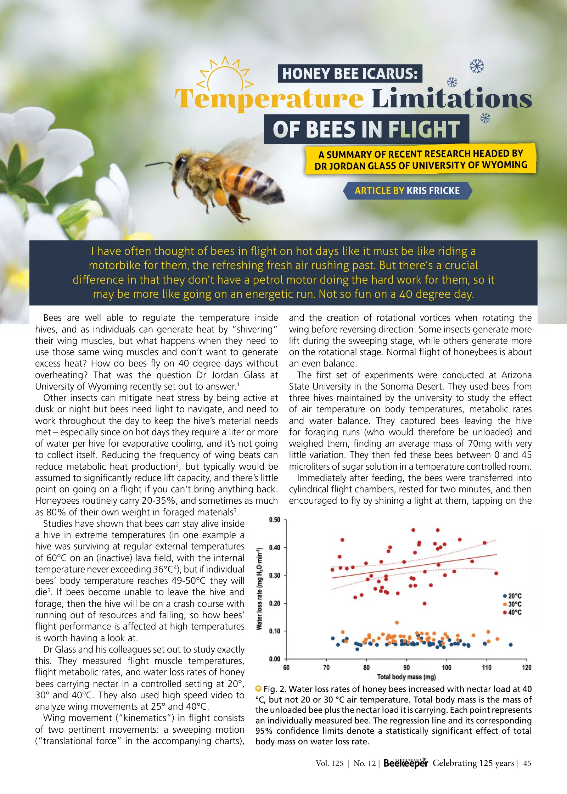

Bees are well able to regulate the temperature inside
hives, and as individuals can generate heat by “shivering”
their wing muscles, but what happens when they need to
use those same wing muscles and don’t want to generate
excess heat? How do bees fly on 40 degree days without
overheating? That was the question Dr Jordan Glass at
University of Wyoming recently set out to answer.1
Other insects can mitigate heat stress by being active at
dusk or night but bees need light to navigate, and need to
work throughout the day to keep the hive’s material needs
met – especially since on hot days they require a liter or more
of water per hive for evaporative cooling, and it’s not going
to collect itself. Reducing the frequency of wing beats can
reduce metabolic heat production2, but typically would be
assumed to significantly reduce lift capacity, and there’s little
point on going on a flight if you can’t bring anything back.
Honeybees routinely carry 20-35%, and sometimes as much
as 80% of their own weight in foraged materials3.
Studies have shown that bees can stay alive inside
a hive in extreme temperatures (in one example a
hive was surviving at regular external temperatures
of 60°C on an (inactive) lava field, with the internal
temperature never exceeding 36°C4), but if individual
bees’ body temperature reaches 49-50°C they will
die5. If bees become unable to leave the hive and
forage, then the hive will be on a crash course with
running out of resources and failing, so how bees’
flight performance is affected at high temperatures
is worth having a look at.
Dr Glass and his colleagues set out to study exactly
this. They measured flight muscle temperatures,
flight metabolic rates, and water loss rates of honey
bees carrying nectar in a controlled setting at 20°,
30° and 40°C. They also used high speed video to
analyze wing movements at 25° and 40°C.
Wing movement (“kinematics”) in flight consists
of two pertinent movements: a sweeping motion
(“translational force” in the accompanying charts),
and the creation of rotational vortices when rotating the
wing before reversing direction. Some insects generate more
lift during the sweeping stage, while others generate more
on the rotational stage. Normal flight of honeybees is about
an even balance.
The first set of experiments were conducted at Arizona
State University in the Sonoma Desert. They used bees from
three hives maintained by the university to study the effect
of air temperature on body temperatures, metabolic rates
and water balance. They captured bees leaving the hive
for foraging runs (who would therefore be unloaded) and
weighed them, finding an average mass of 70mg with very
little variation. They then fed these bees between 0 and 45
microliters of sugar solution in a temperature controlled room.
Immediately after feeding, the bees were transferred into
cylindrical flight chambers, rested for two minutes, and then
encouraged to fly by shining a light at them, tapping on the
I have often thought of bees in flight on hot days like it must be like riding a
motorbike for them, the refreshing fresh air rushing past. But there’s a crucial
difference in that they don’t have a petrol motor doing the hard work for them, so it
may be more like going on an energetic run. Not so fun on a 40 degree day.
Fig. 2. Water loss rates of honey bees increased with nectar load at 40
°C, but not 20 or 30 °C air temperature. Total body mass is the mass of
the unloaded bee plus the nectar load it is carrying. Each point represents
an individually measured bee. The regression line and its corresponding
95% confidence limits denote a statistically significant effect of total
body mass on water loss rate.
ARTICLE BY KRIS FRICKE
A SUMMARY OF RECENT RESEARCH HEADED BY
DR JORDAN GLASS OF UNIVERSITY OF WYOMING
Vol. 125 | No. 12 |
Celebrating 125 years | 45